Chapter 16: Adding Assets to Your App¶
Initially, in this chapter, you’ll learn about managing assets held in an asset catalog and you’ll create that all-important app icon. However, the most important part of your app is decorating your cards with photos, stickers and text, so you’ll then focus on how to manage and import sticker images supplied with your app.
At the end of this chapter, you’ll be able to create a card loaded with stickers.
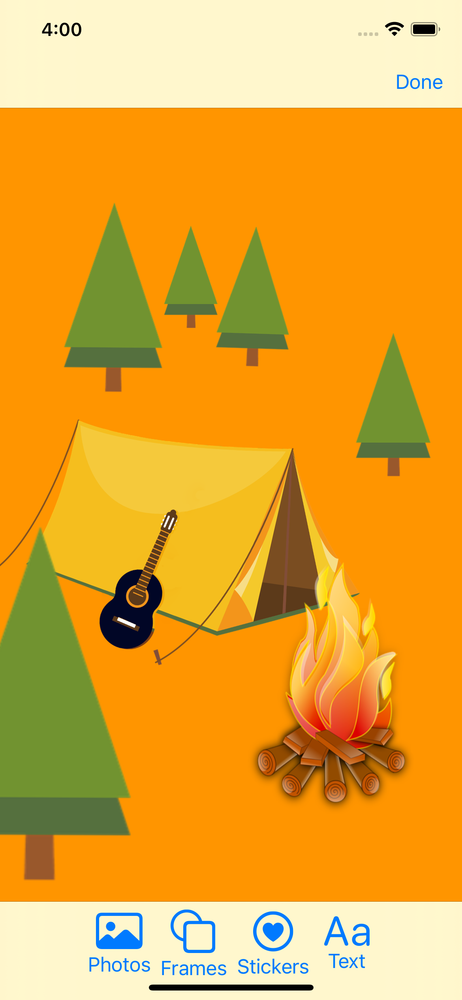
The starter project¶
➤ Open the starter project for this chapter.
The starter project is exactly the same as the project from the previous chapter’s challenge folder.
Asset catalog¶
Skills you’ll learn in this section: Managing images in asset catalogs; app icons; screen resolution; vector vs bitmap
Asset catalogs are by far the best place to manage image and color sets.
Within an asset catalog, under one image set, you can define multiple images for different themes, different devices, different scales and even different color gamuts. When you use the name of the image set in your code, the app will automatically load the correct image for the current environment. When you supply differently scaled images for different devices in an asset catalog, the app store will automatically do app thinning and only download the relevant images for that particular device.
The asset catalog also holds the app icon, the launch screen image and launch screen background color.
Adding the app icon¶
➤ Click the project name Cards at the top of the Project navigator. Choose the target Cards. On the General tab, find App Icons and Launch Images and click the App Icons Source drop-down:
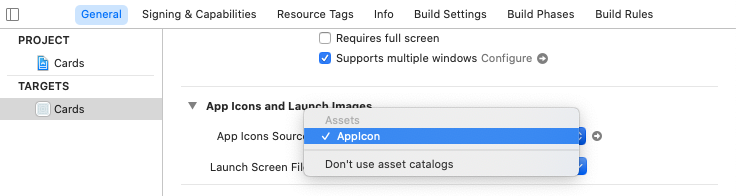
This is where you can specify which icon to use for your app. You can choose to hold the icons in folders instead of asset catalogs, but it’s much easier to keep them in the asset catalog as Apple intended.
➤ Click the arrow to the right of the drop-down. This will take you to the app icon set in the asset catalog. The iOS app template created this empty icon set when you first created your project.
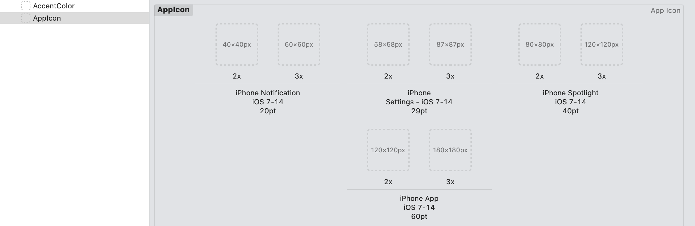
These are all the possible icon sizes and scales for all Apple iOS devices.
If you’re lucky enough to have a designer for your app, as we are, they will distribute a design file, not code. This might be Sketch files or, as in our case, a Figma file.
The designer for this app, Lea Marolt (https://twitter.com/hellosunschein), created all the assets for the app in Figma, a “freemium” vector graphics prototyping tool. You can use Figma in the web interface at https://www.figma.com or download the companion app available from that link. In the assets folder for this chapter, you’ll find a .fig file, which you can import into Figma. As you will see, some design suggestions don’t always make it to the shipped product.
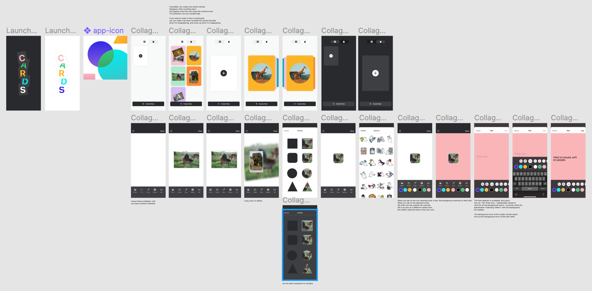
This design includes the app icon. This is a single size, but for the app icon, you’ll need multiple sizes for the different devices. Fortunately, Figma is a vector app, and you can export the icon design to various sizes of PNG format. You can also create icons from a single image at https://appicon.co.
Device resolutions and image scale¶
Early iPhone screens had a 1:1 pixel density which means that a 100x100 pixel image on screen took up 100x100 points. iPhone 4 introduced the retina screen. Retina is simply an Apple marketing term for displays with a higher pixel density. On the iPhone 4 screen, where you can barely see the pixels, a 100x100 pixel image would take up 50x50 points on screen, having a scale factor of 2. iPhone 6s Plus came along, introducing a 3:1 pixel density. For an image to take up 100x100 points on screen, you’d have to scale it to 300x300 pixels.
Apple resolved this scaling difficulty with an @ suffix. An image that is scaled by 2 has a suffix of @2x, and one scaled by 3 has @3x.
➤ In Finder, open the assets folder for this chapter and open the App Icon subfolder. This holds the icons in PNG format, exported from Figma.
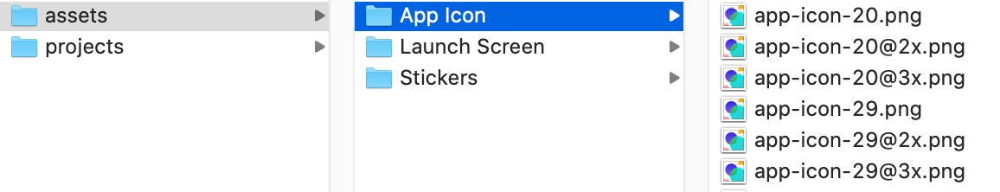
Each file name includes the point size and scale. For example, you can see the first icons are 20 points with three different scales.
➤ With Xcode open on the app icon and Finder open at the App Icon folder, drag each icon to its correct spot. Where iPad and iPhone use the same pixel and point size, you can use the same icon image.
Note: Even though there are now no supported non-retina devices, for iPad you should still provide 1x icons. iPadOS sometimes uses these when running iPhone apps scaled to iPad.
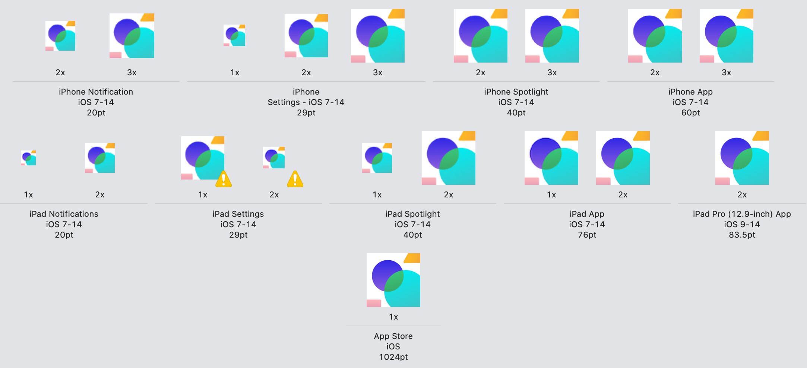
The image above has the 29 pt icons swapped around, showing a yellow exclamation mark as an error. If you see errors, you should correct them. This usually happens when you drag multiple assets at the same time and Xcode doesn’t know where to put them. Consider dragging them one by one or in small groups.
➤ Build and run, and swipe up from the bottom to exit your app. You’ll see your new icon takes the place of the old placeholder icon.
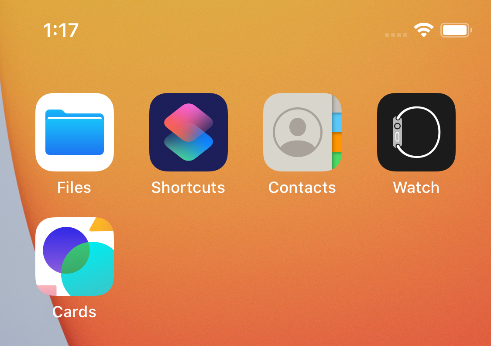
Vector vs bitmap¶
You imported bitmap PNG images for the icons. For other assets, you can use vector formats, such as PDF or SVG. When possible, it’s always better to use vector formats. These are made up of lines, curves and fills. For a vector line, you can set a start point and an end point. When you scale the line, the vector resizes without losing any of its resolution. With a bitmap line, you must stretch or compress pixels.
This image shows two 50 pixel wide images scaled up by twelve to 600 pixels. One is bitmap and the other is vector. You can see the vector image loses none of its sharpness.
Adding a vector image¶
Later, your app will need a placeholder image to show whether there are any errors in loading an image.
➤ In Finder, open your assets folder for this chapter and drag in error-image.svg to the asset catalog panel under AppIcon.
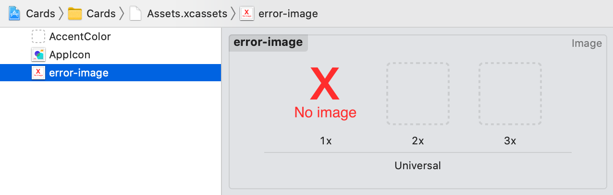
error-image.svg is a vector format image with a native size of 512x512. You don’t need to scale it by 2x and 3x as Xcode can do this for you.
➤ Open the Attributes inspector and change Scales to Single Scale.
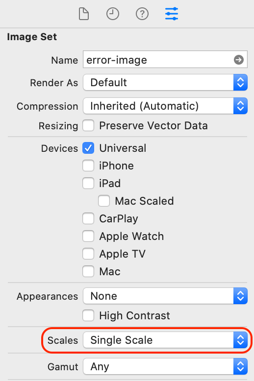
Xcode removes the 2x and 3x options in the center panel. When you build for iPhone 12 Pro, which is 2x resolution, Xcode will automatically add to your app bundle a 512x512 optimized bitmap image scaled to the correct 2x resolution. Bundle images are held in a .car file, the format of which is not publicly available, so you can’t inspect what Xcode has done.
Launch screen¶
Skills you’ll learn in this section: Launch screen; size classes
Another use for the asset catalog is to hold a launch screen image and background color that shows while your app is launching. You’ve already come across Info.plist in Chapter 8, “Saving Settings”. This .plist file is where you’ll set the launch image and color.
➤ Click Cards at the top of the Project navigator and choose the Cards target. Choose the Info tab, and you’ll see the contents of Info.plist in the Custom iOS Target Properties section.
You can add new items to this either by right-clicking an entry and choosing Add Row or by selecting an object and clicking the + sign that appears. You can delete items by clicking the - sign.
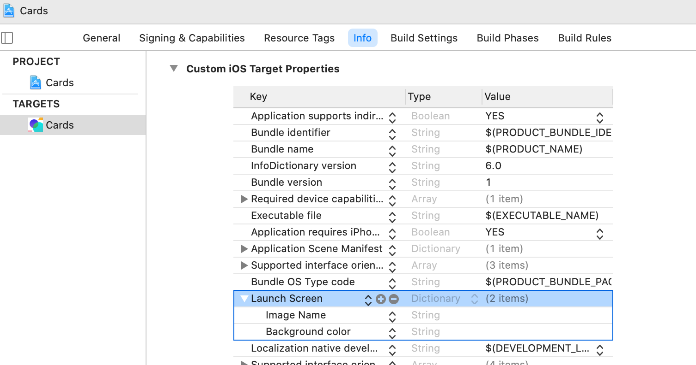
➤ Under Launch Screen, add items for Image Name and for Background color. You’ll probably need to resize the columns to show Value.
➤ Double-click in the Value field for Image Name and enter:
LaunchImage
➤ Double-click in the Value field for Background color and enter:
LaunchColor
➤ Open Assets.xcassets, click the + sign at the bottom of the assets panel and choose Image Set. Rename Image to LaunchImage.
➤ Click the + sign at the bottom of the assets panel again and choose Color Set. Rename Color to LaunchColor.
When you run your app now, the app will use these for the launch screen. Unfortunately, the simulator doesn’t clear launch screen caches, so if you change your launch image or color, in Simulator, you’ll have to go to Device > Erase All Contents and Settings… and clear the simulator completely. On a device, deleting the app should be sufficient, but you might have to restart the device as well.
➤ Click LaunchImage in the catalog. You have the option of filling the three images. However, just as with the error image, you’re going to use a single scale SVG image.
➤ In Finder, open assets/Launch Screen. Drag in launch-screen-light.svg to the 1x spot.
➤ In the Attributes inspector, change Scales to Single Scale.
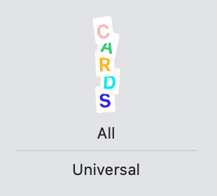
This SVG with a transparent background has a native size of 200x500px. Xcode will create the appropriately scaled bitmap image from this and display it in the center of the screen. Landscape iPhones need an image with a smaller height, so you’ll use size classes to decide which image to load.
Size classes¶
Size classes represent the content area available using horizontal and vertical traits. These two traits can be either regular or compact. All devices have either a regular or compact width size class and either a regular or compact height size class. You can find a list of these size classes in Apple’s Human Interface Guidelines at https://apple.co/348lVx0 under the section Size Classes.
This is an illustration of iPhones and iPads laid on top of each other:
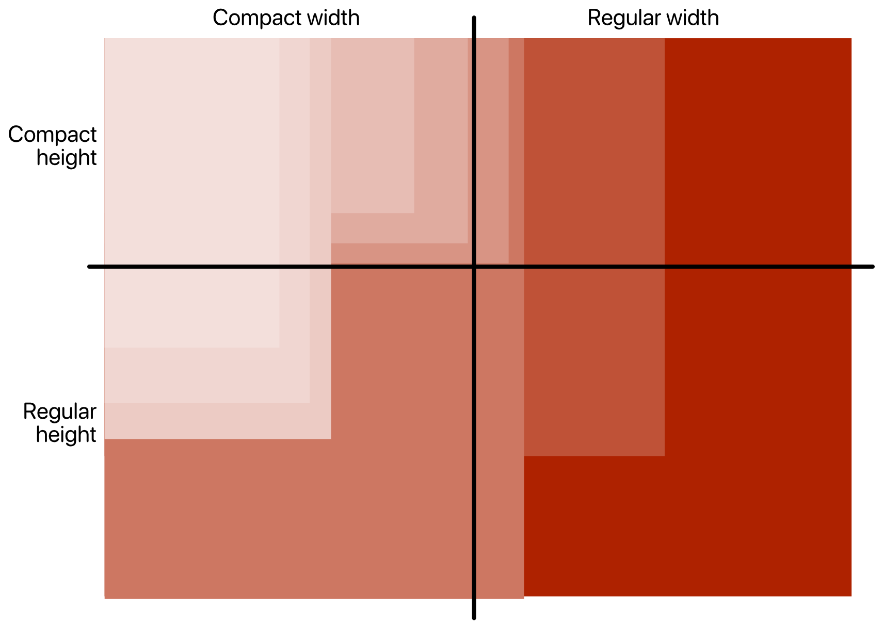
For height in portrait mode, all devices fit into the regular height section. For height in landscape mode, all iPhones fit into the compact height section. In landscape, most iPhones fall into the compact width section. The max size iPhones and iPhone 11 and 12 use regular width in landscape.
iPads are always regular width and regular height. However, you still have to take into account size classes on iPad, because of split screen. When in portrait mode, split screen apps are both compact width. In landscape mode, the user can size between compact width and regular width.
For your app, the current launch image will fit on all devices except for iPhones in landscape. So you’ll specify a sideways image for compact height.
➤ In the Attributes inspector, change Height Class to Any & Compact.
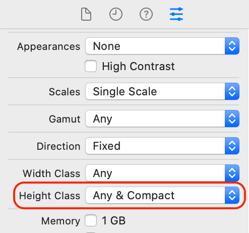
➤ In Finder, from assets/Launch Screen, drag in launch-screen-landscape-light.svg.
➤ Build and run, and your launch screen should show up briefly before your app does. Try rotating the simulator to get the different landscape launch screen. If your launch screen does not show up, remember to erase the simulator contents.
Now that you’ve got the hang of adding new images for checked conditions in the Attributes inspector, you’ll be able to complete the challenge for Dark Mode at the end of the chapter.
Note: At the time of writing, there appears to be a bug in scaling. The SVG image sometimes stretches to full screen. If this bug persists, you would have to resize the image yourself to fit an iPad screen, instead of relying on the asset catalog to manage scaling.
Adding sticker images to your app¶
Skills you’ll learn in this section: Present multiple modals; hashing
There’s one thing that an asset catalog does not allow you to do, and that is enumerate through all the images contained in it.
When you release your cards app, one way of making it stand out from the crowd is to have some excellent stickers.
You could still add the stickers to an asset catalog, but you’d have to keep track of how many there are and ensure that you have a strict naming convention. All items in asset catalogs need to have names that are unique in the app bundle.
As your app becomes more popular, you’ll probably add more stickers and, maybe, categorize them into themes. It would be cumbersome to list each asset by name. You might have multiple artists working on stickers, and you wouldn’t want them to have access to your project.
A solution to this is to use reference folders. Instead of using an asset catalog, you’ll keep your sticker folder outside of your project and access it from the project as a reference folder.
➤ In Finder, take a look at the assets/Stickers/Camping folder. Shortly, you’ll add all these PNG files to your app.
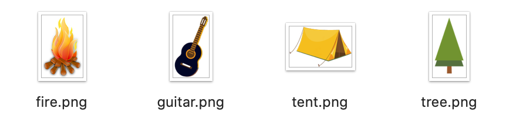
Note: These stickers are from Pixabay: https://bit.ly/3vojAJf. There are several sites, such as https://unsplash.com and https://www.pexels.com, where creators share their work and allow reuse of images. Before adding an image to your app, always check that the license allows commercial use and follow the license instructions. The stickers use Pixabay’s license: free for commercial use with no attribution.
Adding the stickers modal view¶
Earlier in this section, you set up four buttons to present four different modals. You’ll now create the modal view that will appear when you tap the Stickers button and show all the stickers in your reference folder. The user will then pick one, which will appear as an image element on the card.
In Section 1, you used .sheet(isPresented:onDismiss:content:), where you passed a Boolean state property. When you have multiple sheets to show conditionally, you can choose a different method of presentation, by passing an optional Item. In your case, the generic Item will be a CardModal.
➤ Open CardDetailView.swift.
➤ In body, underneath the toolbar modifier, add this:
.sheet(item: $currentModal) { item in
switch item {
case .stickerPicker:
EmptyView()
default:
EmptyView()
}
}
You’ll get a compile error because sheet(item:) requires its parameter to be a type that conforms to Identifiable. This seems reasonable, as under the hood, the system should track which modal you’re currently using.
➤ Open CardModal.swift and make CardModal conform to Identifiable in the way that you did for your Card structure:
enum CardModal: Identifiable {
var id = UUID()
case photoPicker, framePicker, stickerPicker, textPicker
}
You’ll immediately get a compiler error, saying “Enums must not contain stored properties”. Remember that you can’t make a copy of an enumeration by instantiating it, so you can’t add stored vars to an enumeration. Yet, you need to include var id in order to conform to Identifiable.
Making an object Hashable¶
You need a value that uniquely identifies an object. That describes a hash value. Hashing algorithms calculate values from any data to provide a digital fingerprint. Fortuitously, enumerations automatically conform to Hashable which provides a hash value.
➤ Replace var id = UUID() with:
var id: Int {
hashValue
}
Your app will now compile.
Instead of a stored property, this var is a computed property. Now, when you create a CardModal object, each object will have a different id calculated from the enumeration’s hash value.
➤ Open SingleCardView.swift and try out your Stickers button in the live preview. Swipe down to dismiss the modal.

You now have a view to show your stickers, so it’s time to add them to your app.
Reference folders¶
Skills you’ll learn in this section: Groups; reference folders; loading images from files; lazy loading
When you look in your Project navigator, currently all your groups, except for the asset catalogs, have yellow folder icons.
➤ Click the Views group and open the File inspector.
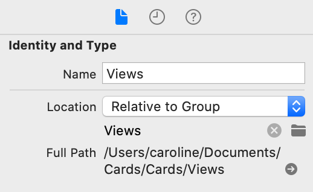
Location describes how to store the group. Relative to Group means that Xcode traverses up the hierarchy of groups and folders to find an Absolute path. In your app’s case, this is the very top Cards item in your Project navigator.
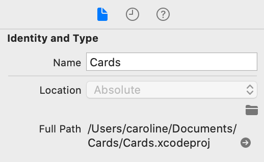
When you create a new group, you can choose to mirror that group with a folder on disk. If you have a file selected inside a group connected to a disk folder, and you create a new group with File ▸ New ▸ Group, then Xcode will create both a new group and a new folder.
If your current selection is inside a logical group without a mirrored folder on disk, then Xcode won’t create a new folder for a new group. The option under File ▸ New ▸ Group will do the opposite. It changes between Group with Folder or Group without Folder depending upon whether your currently selected file is inside a mirrored group or not.
If your current file is in a logical group, the yellow icon has a small triangle at the bottom left.
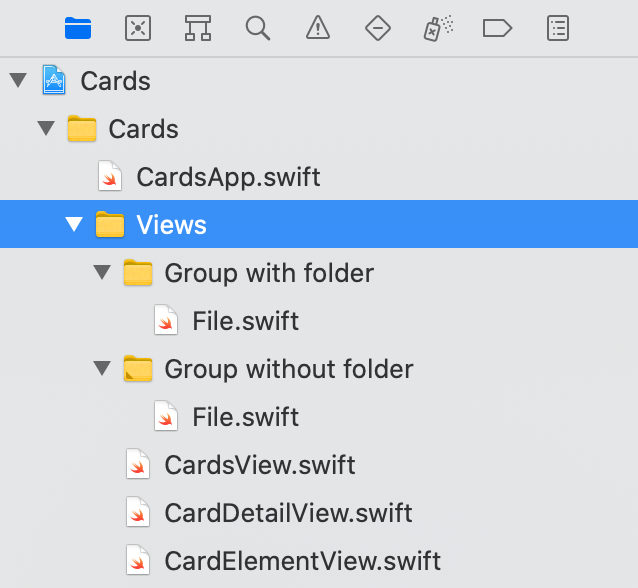
On the other hand, Xcode does not organize reference folders at all. When you bring a reference folder into the project, it will have a blue icon and its hierarchy will reflect the disk hierarchy.
➤ In Finder, locate assets/Stickers.
You’re going to treat this folder as the master folder for your sticker assets. Any stickers that your artists create should go into this folder.
➤ Drag the Stickers folder into the Xcode Project navigator.
Generally, when you import files, you’ll check Copy items if needed, and you’ll choose Create groups rather than Create folder references. Just for this time, you’ll uncheck Copy items if needed and choose Create folder references.
➤ Fill out the import screen with the following:
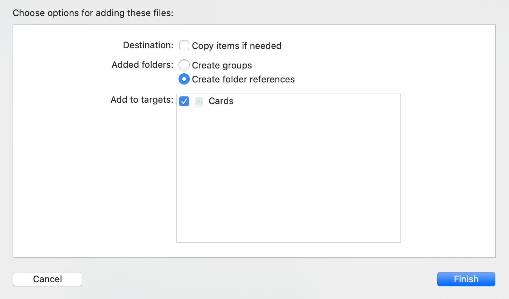
Warning: Whenever you drag a file or folder into Xcode, make sure you examine these settings. You’ll usually check Copy items if needed, and generally, you want to create groups, not folder references.
You now have a blue folder called Stickers in your project, with a blue sub-folder of Camping. The blue folder marks it as a reference folder. Xcode will only allow you to create folders inside this folder, not groups.
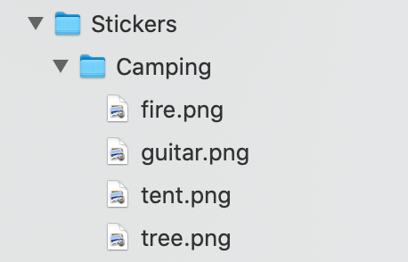
➤ In Finder, create a new folder inside Stickers called Nature and copy Camping/tree.png to this folder. Xcode will immediately update its hierarchy to reflect what’s happening on disk.
If you tried this with yellow groups (don’t!), Xcode wouldn’t be able to find any files you moved in Finder.
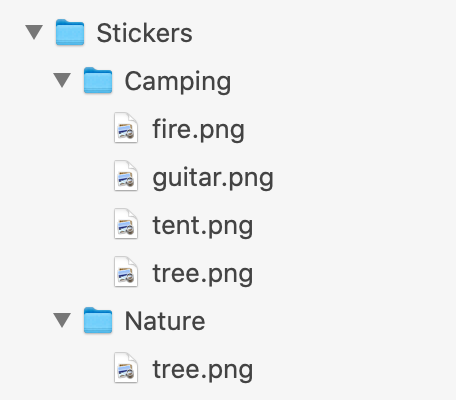
In this folder hierarchy, you have two images with the same name tree.png. In an app bundle or in an asset catalog, you can’t have images with the same name, but this works here because the app contains the reference folder hierarchy.
An advantage with reference folders, is that with Stickers as the top level folder, your artists can create new themes in different folders without touching the Xcode project.
➤ Delete the Nature folder as you don’t need it.
Note: Sometimes your project may lose the reference to the Stickers folder of images. In this case, Stickers will appear in the Project navigator in red. Choose the red folder name and, in the Attributes inspector, tap the folder icon under Location. Navigate to your Stickers folder and click Choose. Alternatively, you can delete this red item and re-import the Stickers folder as a reference folder. If you ever want confirmation of where the folder is, right-click the folder and choose Show in Finder.
Loading files from reference folders¶
Now, you’ll create a Sticker view that loads images from the Stickers folder.
➤ In Single Card Views, create a new sub-group called Card Modal Views, and in this group, create a new SwiftUI View file called StickerPicker.swift.
➤ Open CardDetailView.swift and locate .sheet(item: $currentModal).
➤ In case .stickerPicker:, replace EmptyView() with:
StickerPicker()
➤ Open SingleCardView.swift, preview it, and pin the preview, so that you can access it from other views.
➤ Try out your new stickers modal by tapping Stickers in live preview.
Loading a SwiftUI Image from a folder is not as easy as loading from an asset catalog. Asset catalogs do a lot of the heavy lifting. For example, if you add a vector file to an asset catalog, Xcode will convert to a native pixel format automatically, whereas it’s not an easy task to load a vector file from a folder.
When you load an image from a folder, you load it into an instance of UIKit’s UIImage. You also need to provide the full app bundle resource path.
➤ Open StickerPicker.swift and replace body with:
var body: some View {
// 1
Group {
// 2
if let resourcePath = Bundle.main.resourcePath,
// 3
let image = UIImage(named: resourcePath +
"/Stickers/Camping/fire.png") {
Image(uiImage: image)
} else {
EmptyView()
}
}
}
Going through the code:
- As you’re going to return either an
Imageor anEmptyView, wrap the conditional in aGroup. - Get the full resource path of the app bundle.
- Load the
UIImageusing the full name and path of the sticker and use theuiImageparameter for creating theImageview.
➤ Resume the live preview, tap Stickers, and you’ll see the sticker image.
However, you don’t only want one sticker, you want to see all of them. Depending on how many stickers you have, you shouldn’t load up all the UIImages at once, as loading images is resource heavy and will block the user interface. You can load the file names up front and, as the user scrolls, load the image when it’s needed. This is called lazy loading.
➤ Create a new property in StickerPicker to hold the file names:
@State private var stickerNames: [String] = []
➤ Create a new method to load the sticker names:
func loadStickers() -> [String] {
var themes: [URL] = []
var stickerNames: [String] = []
}
You’ll first load the folder names in the top level in the Stickers folder. These will be themes. You’ll be able to add new themes to your app in the future simply by adding a new folder inside the Stickers folder in Finder. You won’t have to change any code to do this.
➤ Add this code after the previous code:
// 1
let fileManager = FileManager.default
if let resourcePath = Bundle.main.resourcePath,
// 2
let enumerator = fileManager.enumerator(
at: URL(fileURLWithPath: resourcePath + "/Stickers"),
includingPropertiesForKeys: nil,
options: [
.skipsSubdirectoryDescendants,
.skipsHiddenFiles
]) {
// 3
for case let url as URL in enumerator
where url.hasDirectoryPath {
themes.append(url)
}
}
Going through the code:
- Load the default file manager and bundle resource path.
- Get a directory enumerator, if it exists, for the Stickers folder. For the
optionsparameter, you skip subdirectory descendants and hidden files. Unless you skip the subdirectories, an enumerator will continue down the hierarchy. You currently just want to collect the top folder names as the themes. - If the URL is a directory, add it to
themes.
An alternative to the for case let code is:
while let url = enumerator.nextObject() as? URL {
if url.hasDirectoryPath {
themes.append(url)
}
}
This will perform the loop in exactly the same way, but the given code is more succinct.
Now, you’ll iterate through all the theme directories and retrieve the file names inside.
➤ Add this code after the previous code:
for theme in themes {
if let files = try?
fileManager.contentsOfDirectory(atPath: theme.path) {
for file in files {
stickerNames.append(theme.path + "/" + file)
}
}
}
return stickerNames
For each theme folder, you retrieve all the files in the directory and append the full path to stickerNames. You then return this array from the method.
➤ Create a new method to load a UIImage from a path:
func image(from path: String) -> UIImage {
print("loading:", path)
return UIImage(named: path)
?? UIImage(named: "error-image")
?? UIImage()
}
You temporarily print out the path name so that you can check whether you’re lazily loading the image. You then return the UIImage loaded from the path name. If you can’t load the image, return the error image from the asset catalog that you created earlier. As this is still optional and you need to return a non-optional, if everything fails, create a blank UIImage.
➤ Change body to:
var body: some View {
ScrollView {
ForEach(stickerNames, id: \.self) { sticker in
Image(uiImage: image(from: sticker))
.resizable()
.aspectRatio(contentMode: .fit)
}
}
.onAppear {
stickerNames = loadStickers()
}
}
Instead of just showing one sticker, you’re iterating through all the sticker names and creating an Image from the UIImage. Using onAppear(perform:), you can load the stickers when StickerPicker first loads.
➤ To see the print output, build and run. Choose the first card and tap Stickers. Watch the debug console output, and you’ll see all the images are loading up front, ending with the tree and the guitar. As mentioned before, with a lot of stickers, this will block the user interface.
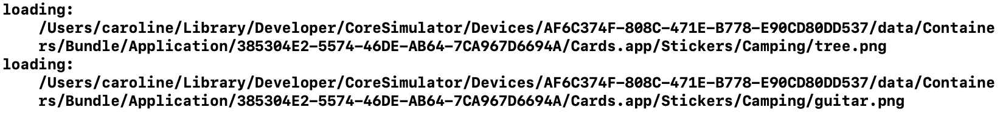
➤ To get the stickers to load lazily, in body, Command-click ForEach and embed it in a VStack.
➤ Change VStack { to:
LazyVStack {
➤ Build and run, and display the stickers modal screen again. Now, only the images that show on screen, plus the one just after, load. Scroll down, and you’ll see in the debug console that the guitar image loads as you approach it. Your images are now loading lazily.
These images are much too big and would look much better in a grid. Fortunately, as well as lazy VStack and HStacks, SwiftUI provides a lazy loading grid view.
Using lazy grid views¶
Skills you’ll learn in this section: Grids
LazyVGrid and LazyHGrid provide vertical and horizontal grids. With the LazyVGrid, you define how to layout columns and, with the LazyHGrid, you layout rows.
➤ Add a new property to StickerPicker:
let columns = [
GridItem(spacing: 0),
GridItem(spacing: 0),
GridItem(spacing: 0)
]
➤ Change LazyVStack { to:
LazyVGrid(columns: columns) {
You’re still using the same ForEach and Image views but they now fit into the available space in the grid instead of taking up the whole width of the screen. The grid uses all the horizontal available space and divides it equally among the specified GridItems.
➤ To visualize this, in the design canvas, stop the live preview, if there is one, and scroll down to Sticker Picker Previews. In code, place the cursor just after the Image modifiers. The outlines of the Images will show in the preview.
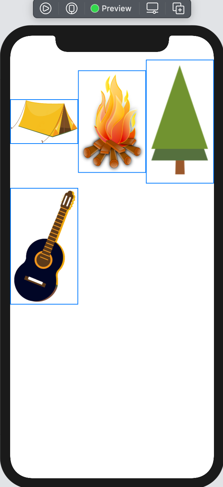
Swift Tip: If this were a LazyHGrid, you would define rows in the same way as you have columns, and the grid would divide up the available vertical space. To scroll horizontally, add a horizontal axis: ScrollView(.horizontal).
➤ Add a landscape preview to StickerPicker_Previews after StickerPicker():
StickerPicker()
.previewLayout(PreviewLayout.fixed(width: 896, height: 414))
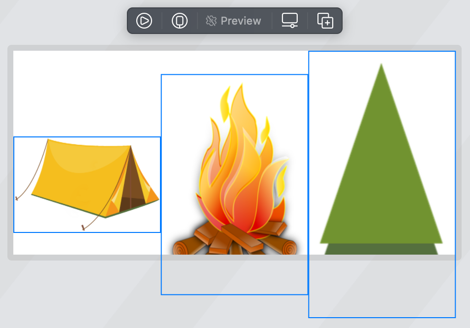
Although the grid looks good in portrait mode, it would look better with more images horizontally when in landscape.
➤ Change the columns property declaration to:
let columns = [
GridItem(.adaptive(minimum: 120), spacing: 10)
]
The columns will size to 120 points, separated by ten points.
➤ Preview both portrait and landscape.
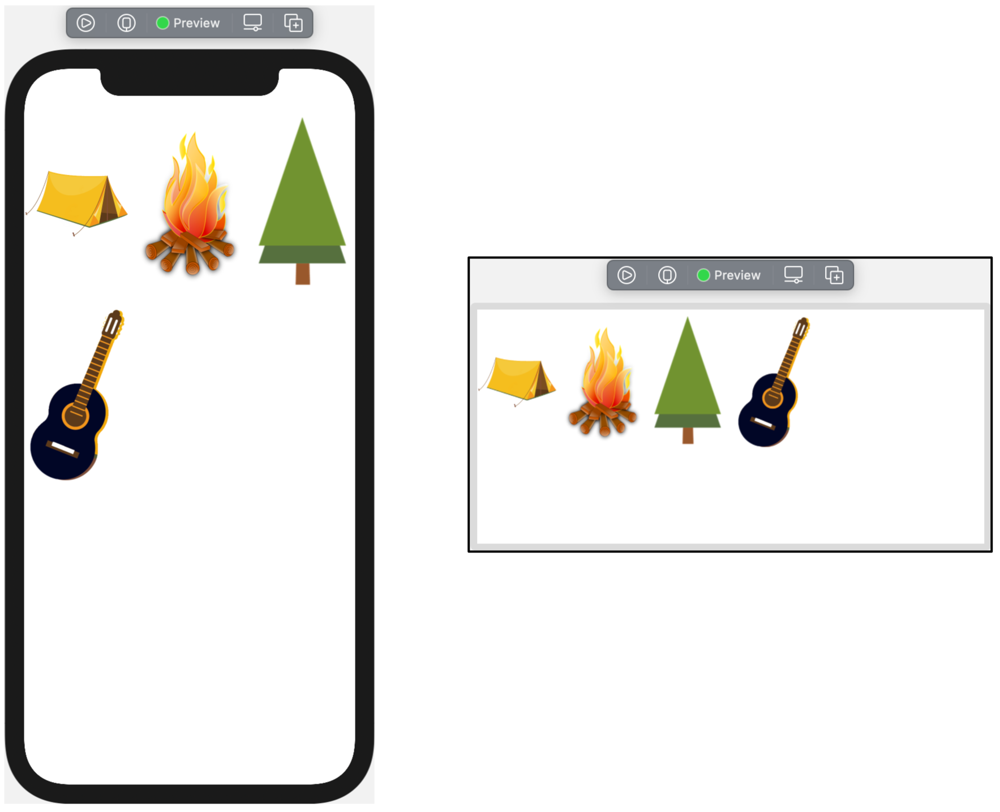
Swift Tip: As well as adaptive, GridItem.size can be fixed with a fixed size, or flexible, which sizes to the available space.
Selecting the sticker¶
Now that you have the stickers showing, you’ll tap one to select it, dismiss the modal and add the sticker to the card as a card element.
➤ In StickerPicker, add a property to hold the selected image:
@Binding var stickerImage: UIImage?
The parent of the modal will pass in a state property to hold the selected image.
➤ Add the environment property that holds the presentation state:
@Environment(\.presentationMode) var presentationMode
You’ll use this property to dismiss the modal.
➤ Add a modifier to Image:
.onTapGesture {
stickerImage = image(from: sticker)
presentationMode.wrappedValue.dismiss()
}
When the user taps an image, you’ll update the bound sticker image and dismiss the modal.
➤ Update the preview:
struct StickerPicker_Previews: PreviewProvider {
static var previews: some View {
StickerPicker(stickerImage: .constant(UIImage()))
}
}
You can now select a sticker and at the same time dismiss the modal. CardDetailView will then take over and store and show the selected sticker.
➤ Open CardDetailView.swift and add a new state property:
@State private var stickerImage: UIImage?
This will hold the current sticker chosen from StickerPicker.
➤ Locate the sheet(item:) with the stickerPicker case. This will have a compile error as you’re not yet passing the state property to StickerPicker.
➤ Change StickerPicker() to:
StickerPicker(stickerImage: $stickerImage)
Now that you’ve bound the state property, your app should compile again.
➤ After the previous code, add this:
.onDisappear {
if let stickerImage = stickerImage {
card.addElement(uiImage: stickerImage)
}
stickerImage = nil
}
On dismissal of the modal, you should store the sticker as a card element and reset the sticker image to nil. You’ll get a compile error until you’ve written addElement(uiImage:).
➤ Open Card.swift in the Model group and add this new method:
mutating func addElement(uiImage: UIImage) {
let image = Image(uiImage: uiImage)
let element = ImageElement(image: image)
elements.append(element)
}
Here you take in a new UIImage and add a new ImageElement to the card. In the following chapter, you’ll be able to use this method for adding photos too.
➤ Build and run, select the orange second card and add some stickers to it. Resize and reposition the stickers as you want and create a masterpiece :].
Challenges¶
Challenge 1: Set up a Dark Mode launch screen¶
Your app currently has different launch screens for portrait and also landscape, when the height size class is compact. Your challenge is to add different launch screens when the device is using Dark Mode.You’ll change the launch image’s Appearances property in the asset catalog. You’ll find the dark launch screen images in the assets folder. Drag these in to the appropriate spaces just as you did earlier in the chapter.
When you test on the simulator, to get the new launch screen to show, you’ll need to erase all device contents and settings.
Challenge 2: Set up launch colors¶
This chapter did not cover colors specifically, but you can change appearance and device in the same way as with images. You’ve already set up a launch color in Info.plist to use as the launch background color. Change the launch color in the asset catalog. Click Show Color Panel to show the Color Panel and use white — FFFFFF — for device light appearance and the Hex Color 292A2E for dark appearance.
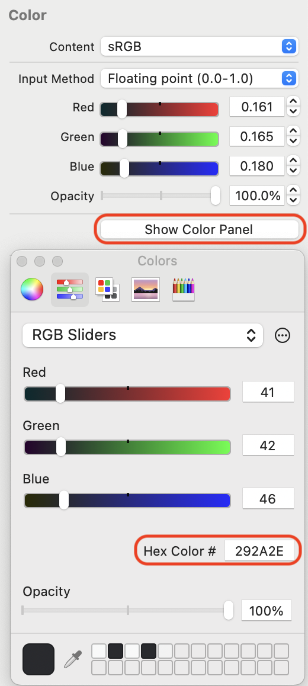
If you get stuck, the asset catalog in the project in the challenge project will show you what to do.
Key points¶
- Asset catalogs are where you should be managing your images and colors most of the time.
- If the asset catalog is not suitable for purpose, then use reference folders.
- In asset catalogs, favor vector images over bitmaps. They are smaller in file size and retain sharpness when scaled. Xcode will automatically scale to the appropriate dimensions for the current device.
- Think about how you can make your app special. Good app design together with artwork can really make you stand out from the crowd.
Where to go from here?¶
In this chapter you used app icons and launch screens. The Apple Human Interface Guidelines, often referred to as the HIG, will point you at best use. You can find the HIG for iOS here: https://developer.apple.com/design/human-interface-guidelines/ios/visual-design/launch-screen/.
For example, rather than using branding on the launch screen, they suggest making your launch screen similar to the first screen in your app, so that it appears that the app loads quickly.
You should study the HIG so that you know what Apple is looking for in an app. People who use Apple devices enjoy clean, crisp interfaces, and the guidelines will help you follow this quest. If you follow the guidelines diligently, you might even be featured by Apple in the app store.